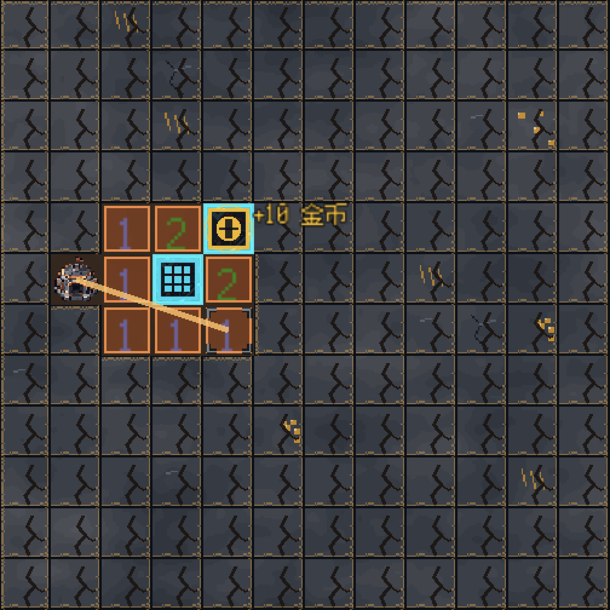
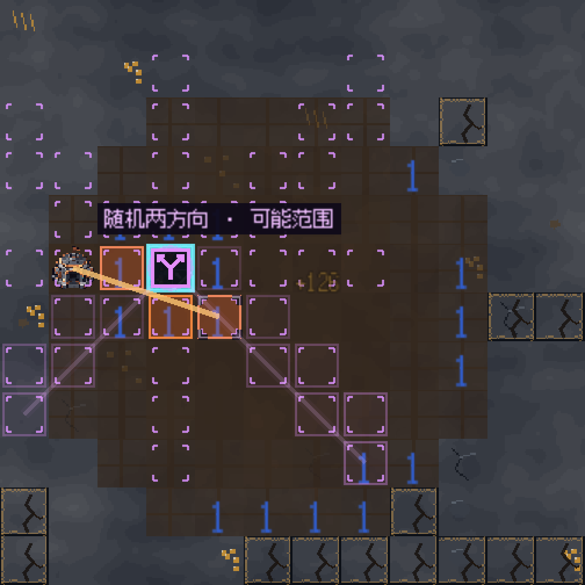
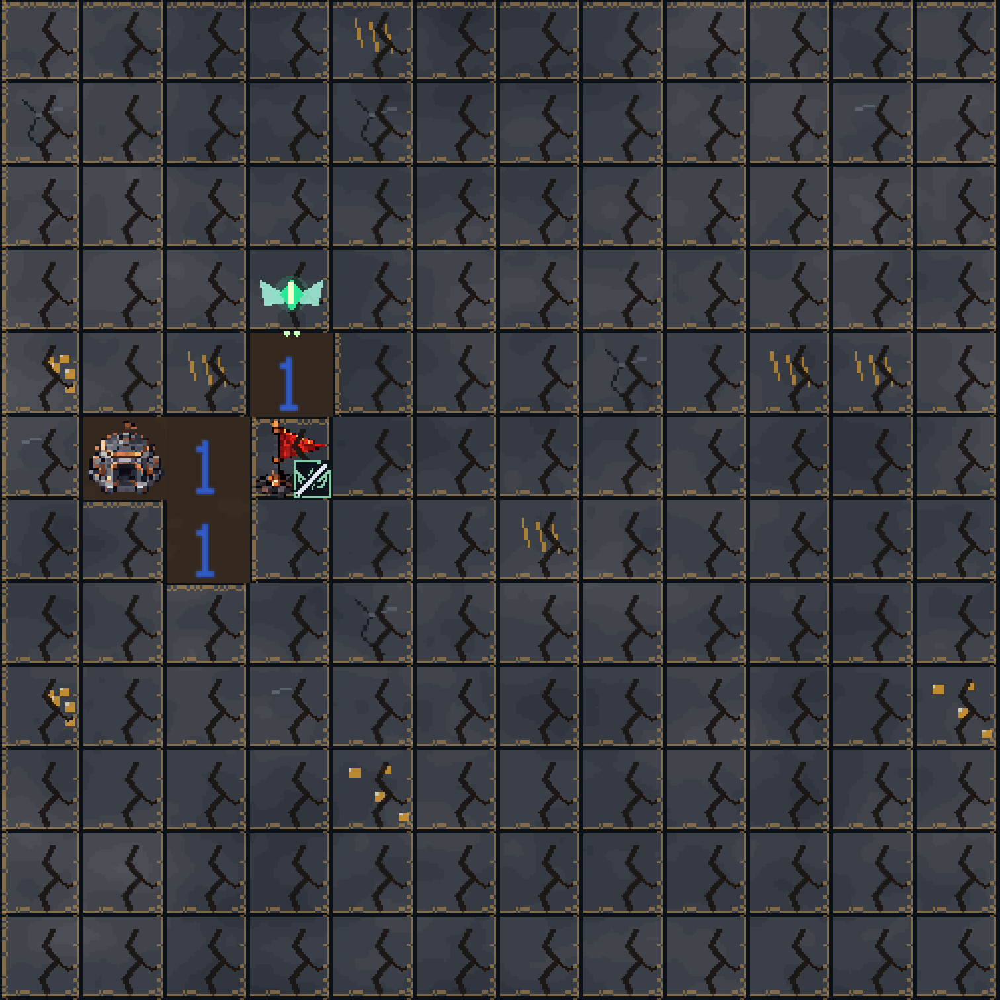

第二章「激光矿场」的四类钻石效果（金币 / 范围激活 / 随机双射线 / 探索精灵）： 工程实现已全部落地并全量测试通过，但规则数值尚未经你拍板、玩法未经真人试玩。本页防止忘记「做到哪、卡在哪、欠什么」。
点图可打开 网页相册 看完整 9 组截图。配置方式见《实现与验收》：lvl.diamond_effects 数组 + diamond_effect_seed，只在第二章点击激光关生效。

标记后激光命中发 10 金币（来源 diamond_effect_gold，每颗每局一次，不冒充标记奖励）；范围钻石开含中心 3×3（裁盘缘/洞区），可接力激活相邻已标钻石（截图为一枪 3×3 + 金币连锁）。入队即锁消耗，动画未完不能再触发。

激活时才从八方向不放回抽 2 各射一条（正式配置射程 3，展示盘 4）；共用 LaserGeometry 几何与整枪旧设施账本，固定种子可复现、悬停不抽签不推进随机序列；预览只画紫色「可能范围」并明示随机。

临时飞行单位：只依据公开数字开确定安全格（输入无 is_mine 也可运行，不读隐藏雷位）；与机器人共享目标锁、不进商店/限购/升级体系；作业开格按基础奖励，来源 diamond_explorer 独立记账。
管理器 scripts/diamond/diamond_effect_manager.gd（配置校验/旗快照/队列/独立 RNG/整枪提交）+ explorer_manager.gd + diamond_icon.gd；接入点 laser_manager.fire() 先 prepare_shot 再逐格结算（旗格免破坏≠不可激活）；trigger_ledger 保证主束与钻石射线同枪去重；结算完才判胜（resolving_shot 锁）。测试四件套在 tests/ 与 tmp/auto_diamond_*。
出处：《开发计划 2026-10-22》第 2 节提出的待定项；《实现与验收 2026-10-23》首版全部按工程默认实现。没有任何一项经过用户正式拍板——试玩后若要改，先改这里再改代码。
| 编号 | 事项 | 当前工程默认（已实现） | 状态 |
|---|---|---|---|
| D1 | 如何激活钻石 | 正确标记后被主束/副束/钻石空间效果命中才激活；标记本身不放技能 | 默认值·待拍板 |
| D2 | 一次性还是反复触发 | 每颗每局一次；入队即锁定；重开恢复；撤旗重插不刷新 | 默认值·待拍板 |
| D3 | 钻石互相激活（连锁） | 允许接力射击开始时已正确标记的钻石；未标钻石不会自动变触发器 | 默认值·待拍板 |
| D4 | 「周围 9 格」范围 | 含中心的 3×3，裁盘外与洞区；中心保留钻石和旗 | 默认值·待拍板 |
| D5 | 效果命中未标钻石 | 按碎钻语义打碎，不自动保护/激活——WP6 试玩头号观察点 | 默认值·待拍板 |
| D6 | 双射线方向与射程 | 八方向不放回抽 2；射程默认 3（展示盘 4）；方向集合可配置 | 默认值·待拍板 |
| D7 | 金币数量 | 10（gold_amount 可配） | 数值待试玩 |
| D8 | 精灵能力与参数 | 3 次作业 / 1.5s 间隔 / 20s 寿命 / 并存 8 只 FIFO；无确定目标则等待 | 数值待试玩 |
| D9 | 钻石类型何时可见 | 正确旗后显示形状角标+说明；已消耗=缺角+斜杠；未调查格不暴露 | 默认值·待拍板 |
| D10 | 旧设施能否触发新钻石 | 旧矿石/过载/旧节点爆炸不触发钻石；新射线遵从旧束规则同枪去重 | 默认值·待拍板 |
| 工作包 | 内容 | 状态 |
|---|---|---|
| WP0 规则收敛 | D1–D10 拍板 | 工程默认值代跑，未正式拍板 |
| WP1 最小纵向流程 | 配置/状态/旗格激活/金币/重开清理 | 完成（工程验收） |
| WP2 范围与连锁 | 3×3/队列/混合链/去重 | 完成（工程验收） |
| WP3 随机双射线 | 抽样/几何复用/可能范围预览 | 完成（77/77 含预览视觉） |
| WP4 探索精灵 | 公开推理/目标锁/生命周期 | 完成（26/26） |
| WP5 反馈与兼容 | 四类型识别/说明/统计/旧关回归 | 完成（8 旧套件全绿） |
| WP6 机制试玩 | 单项盘/混合盘/误打案例/真人体验 | 未开始——需要你 |
| WP7 关卡与数值 | 正式配置比例/金额/教学/地图 | 试验版已铺（五关稀疏配置） |
第二章五关已稀疏接入：2-1 金币×2、2-2 范围+金币、2-3 双射线+范围+金币、2-4 精灵+范围+金币、2-5 四类型组合；关前简介/机制标签/规则页/悬停说明已补教学。
_update_hover 后 77/77；②基线对照（5d485fc 全绿 vs 0d66f62 六套件进不了关）抓出真回归：教学句并入 intro_line 撑破选关布局，「开始本关」83% 落在 1024 窗外——修 level_select.gd（详情区自动换行 + 行内提示 18 字截断）后 8 旧套件全绿；③退出资源警告两棵树都间歇出现（verbose 6 次与多等 20 帧对照均阴性），定性为既有问题不修。use_custom_user_dir 实测无效
最小项目对照确认设置被无视（此前验收的"隔离存档"实际没隔离）；改用 APPDATA 环境变量按进程重定向，全程真实隔离重跑全部套件。另记录 main.gd _start_level_with 对 null 关卡无保护（基线隐患，b1682fc 引入）。钻石效果展示.html + 拍摄脚本 tmp/diamond_effect_screenshots.gd（固定种子 42）。_apply_diamond_effects 与关卡配置。main.gd:445 对 null 关卡无保护（基线隐患）；旧测试脚本证据路径硬编码 E:/godot/扫雷/（旧机器路径，不影响运行）。| 资料 | 位置 |
|---|---|
| 开发计划（需求来源 / D1–D10 定义 / WP 划分） | docs/active/玩法设计/第二章-激光矿场/钻石效果系统-开发计划-2026-10-22.md |
| 实现与验收（首版规则 / 配置格式 / 测试证据） | docs/active/玩法设计/第二章-激光矿场/钻石效果系统-实现与验收-2026-10-23.md（含 10-23 晚间收尾章节） |
| 网页相册（9 组实机截图） | 钻石效果实机截图-2026-10-24/钻石效果展示.html |
| 用户试玩 TODO（WP6/D1–D10 执行页） | 钻石效果-我的TODO.html（勾选与备注自动存浏览器） |
| 核心代码 | scripts/diamond/（管理器+精灵+图标）；接入 laser_manager.gd / main.gd / level_database.gd |
| 测试脚本 | tests/diamond_effect_system_test.gd（78）、tmp/auto_diamond_effect_system_test.gd（38）、tests/diamond_explorer_test.gd（26）、tmp/diamond_visual_validation.gd（77）；运行须带 APPDATA=<沙盒> 隔离存档 |